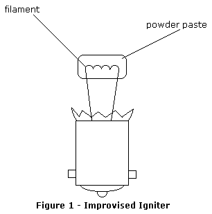

Tom Spooner
Here's a quick and dirty igniter solution for those pyrotechnic situations when you find yourself short of the standard rocketry item.
Obtain an ordinary incandescent flashlight bulb. Carefully break away the glass shell, leaving the filament intact. This can be done by squeezing the bulb with vise grip pliers set to gap when fully closed; this prevents the filament from being crushed and broken. Tapping very carefully with a hammer works, too.
Now make a paste of pistol powder (I usually have Hercules on hand, and that works fine) and good ol' Elmer's Glue. Take a small glob of this paste and press it onto the bulb filament. Let it dry completely. (fig. 1)

This improvised igniter can be set off with a regular model rocketry firing circuit. It is suitable for detonating fuel/air ground burst simulators, igniting sparkler material (to ignite thermite), initiating a time delay fuse, or to ignite other incendiary substances.
Pyrodex or improvised black powder (potassium nitrate 75%, charcoal 15%, sulfur 10%) may be substituted for the pistol powder.
(c) 2001